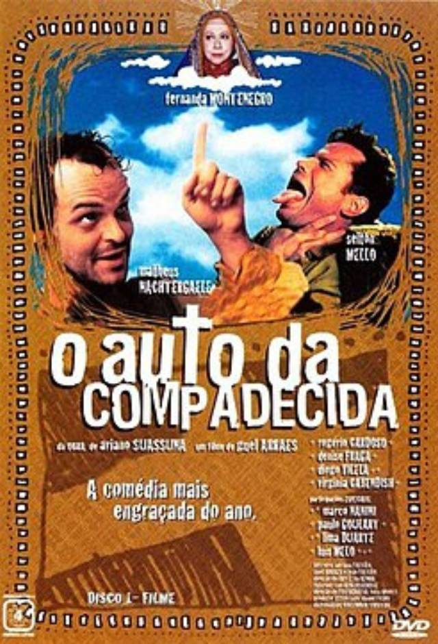

As aventuras dos nordestinos João Grilo, um sertanejo pobre e mentiroso, e Chicó, o mais covarde dos homens. A dupla luta para sobreviver aplicando golpes no pequeno vilarejo de Taperoá, no sertão da Paraíba - nem o temido cangaceiro Severino de Aracaju escapa das artimanhas de João Grilo e Chicó. A dupla tem a chance de se redimir com a aparição de Nossa Senhora.
• Lançamento: 15 de setembro de 2000 (Brasil)
• Direção: Guel Arraes
• Roteiro: baseado na obra de Ariano Suassuna
• Duração: 104 minutos
• Baseado na obra de Ariano Suassuna, o filme leva para o cinema elementos marcantes da cultura nordestina, como linguagem, religiosidade e humor.
• A produção foi originalmente exibida como minissérie na televisão e, devido ao enorme sucesso, foi adaptada para o formato de longa-metragem.
• O filme combina comédia com crítica social, abordando temas como desigualdade e moralidade de forma acessível ao público.